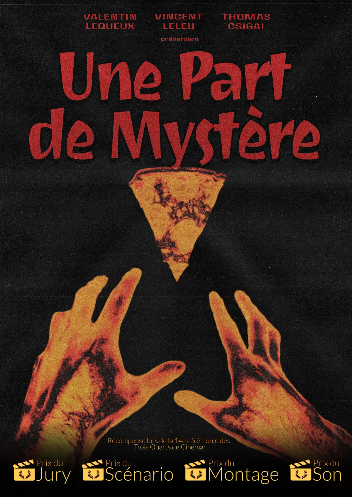

Le concoursThe contest
Chaque année, Trois Quarts de Pouce lance un concours de court-métrage ouvert aux étudiants. Les équipes ont environ un mois pour aller de l’idée au film terminé : écriture, tournage, montage, son. Les films sont ensuite projetés et récompensés lors de la soirée des Trois Quarts de Cinéma.
Every year, Trois Quarts de Pouce runs a short film contest open to students. Teams get about a month to go from an idea to a finished film: writing, shooting, editing, sound. The films are then screened and awarded at the Trois Quarts de Cinéma night.
Une part de mystère y a reçu quatre prix : celui du jury, du scénario, du montage et du son.
Une part de mystère won four awards there: jury, screenplay, editing and sound.
